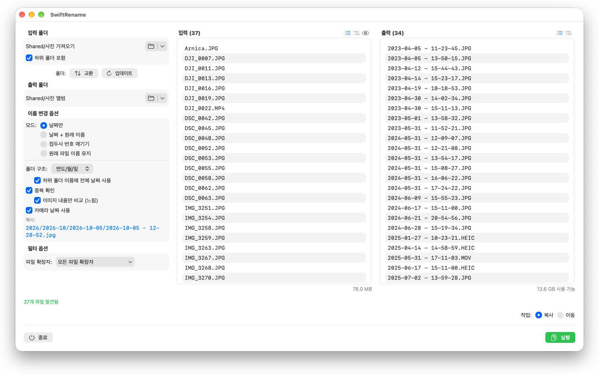
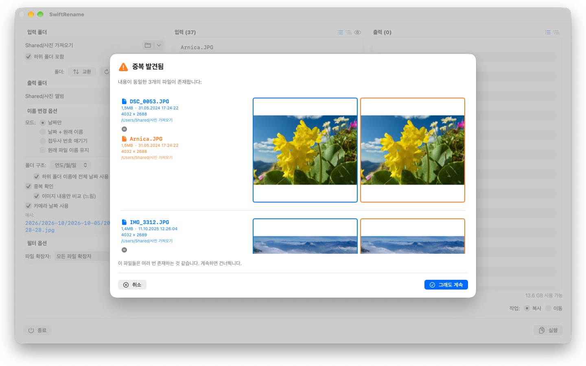

수백 개의 사진과 파일을 한 번에 이름 변경하세요 — 카메라 날짜 기준, 번호 매기기, 또는 연도와 월 폴더로 정리. 중복 파일은 자동으로 찾아 건너뜁니다.



SwiftRename은 Mac에서 파일을 일괄로 이름 변경, 복사, 이동할 수 있는 강력한 도구입니다. 폴더를 선택하고, 새 이름의 형식을 정한 뒤, 실시간 미리 보기를 확인하고 실행하세요.
24개 언어: Deutsch · English · Español · Français · Italiano · Nederlands · Português · Svenska · Norsk · Suomi · Polski · Čeština · Hrvatski · Magyar · Română · Türkçe · Русский · Українська · فارسی · ไทย · 日本語 · 한국어 · 简体中文 · 繁體中文
이름 변경 모드
- 날짜만: 파일에 날짜로 이름을 지정합니다 (예: 2024-01-15 - 14-30-00)
- 날짜 + 원래 이름: 날짜를 앞에 붙이고 원본 이름을 유지합니다
- 접두사 번호 매기기: 사용자가 지정한 접두사로 순차 번호를 매깁니다 (예: 여행_0001)
- 원래 파일 이름 유지: 이름은 그대로 두고 파일을 폴더로만 정리합니다
폴더 구조
파일을 연도, 월, 일별 폴더로 자동 정리합니다 — 원하는 경우 모든 하위 폴더 이름에 전체 날짜를 넣을 수도 있습니다 (예: 2026/2026-02/2026-02-20). 여러 십 년에 걸친 파일에는 상위에 십 년 단위 폴더가 추가됩니다. 또는 "유지"를 선택하면 원본 폴더의 하위 폴더 구조를 대상에 그대로 복제합니다.
카메라 날짜
사진과 동영상은 실제로 촬영된 순간을 기준으로 이름이 지정됩니다: SwiftRename은 카메라 날짜(EXIF)를 읽습니다 — 모든 주요 카메라 제조사(Canon, Nikon, Sony, Fujifilm 등)의 RAW 형식은 물론 HEIC, JPEG, PNG, TIFF 및 일반 동영상 형식까지 지원합니다. 파일에 카메라 날짜가 없으면 대신 생성 날짜를 사용합니다.
중복 감지
중복 파일은 파일 크기와 내용을 기준으로 감지됩니다 — 생성 날짜와 무관하므로, 타임스탬프가 다른 동일한 사진도 놓치지 않습니다. 선택적 이미지 비교를 사용하면 다른 앱에서 다시 저장된 사진까지 찾아냅니다. 축소판 미리 보기로 두 파일을 나란히 비교할 수 있으며, 중복 파일은 자동으로 건너뜁니다.
더 많은 기능
- 한 번의 클릭으로 복사 또는 이동 — 같은 폴더 안에서 제자리 이름 변경도 가능
- 최근 사용한 입력 및 출력 폴더에 빠르게 접근
- 하위 폴더 포함; 파일 목록을 평면 또는 폴더 트리로 보기
- 다중 선택으로 파일 확장자 필터링
- 무엇이든 변경되기 전에 새 이름을 실시간으로 미리 보기
- 전체 작업에 대한 실행 취소 및 다시 실행 (Cmd+Z)
- 파일 이름과 백분율이 표시되는 진행 상황 — 언제든지 취소 가능
- 작업 시작 전에 여유 디스크 공간 확인
- Finder에서 폴더를 바로 드래그 앤 드롭
모든 것이 Mac 안에 머뭅니다. 네트워크 연결 없음, 계정 없음, 데이터 수집 없음.
- macOS 12 이상 필요
- 24개 언어 지원
- 지원: SwiftAppsBavaria@gmx.net
다른 앱
sCollectPlay
미디어 라이브러리를 위한 플레이어: 간단히 폴더, iTunes XML 또는 sCollect 미디어 라이브러리에서 음악, 영화, 오디오북, 팟캐스트를 재생합니다.
sCollectPlay Lite
sCollectPlay의 간결한 버전: 간단히 폴더, iTunes XML 또는 sCollect 미디어 라이브러리를 열어 음악, 영화, 오디오북, 팟캐스트를 재생합니다 — 재생 목록과 오디오 및 자막 트랙, 슬로 모션과 프레임 단위 이동을 지원합니다. 한 번에 하나의 소스만 열 수 있습니다. 열 브라우저, 사용자 재생 목록, 최근 사용한 소스 목록은 정식 버전에서만 사용할 수 있습니다.
sName2Date
파일 이름의 날짜를 촬영 일시로 사진, 동영상, 오디오 녹음에 기록합니다 — IMG_20240115_103000.jpg 같은 파일이 어떤 사진 관리 프로그램에서도 올바르게 정렬되도록 합니다.
sName2Date Lite
한 번에 파일 하나를 다루는 버전: 파일 이름의 날짜를 촬영 일시로 사진, 동영상 또는 오디오 녹음에 기록하고, 직접 설정하고, 이름을 ISO 형식으로 바꾸고, 모든 것을 ⌘Z로 되돌립니다 — sName2Date와 같은 기능이지만 폴더 전체는 다루지 않습니다.
sBikeBridge
포털에 업로드하지 않고 자전거 라이딩을 분석합니다: 이 형식으로 기록하는 모든 사이클 컴퓨터의 FIT 파일과 GPX, TCX를 불러옵니다. 라이딩 기록은 Mac의 자체 라이브러리에 저장됩니다 — 지도, 파워, 심박수, 사진, 메모와 함께; 중복 항목은 가져오기 과정에서 인식됩니다. 연도별·월별 주요 지표와 거리, 상승 고도, 시간 필터로 라이딩을 비교할 수 있습니다. 원하면 지도를 오프라인으로도 사용할 수 있습니다.